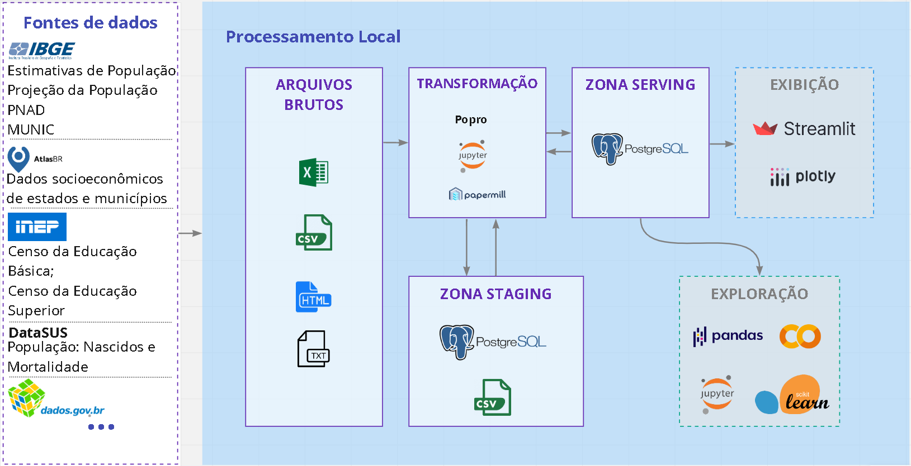
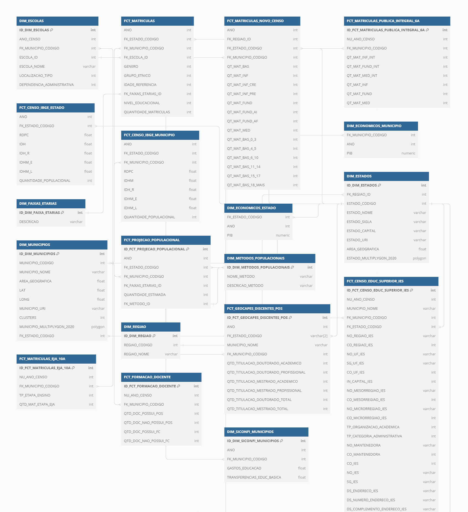
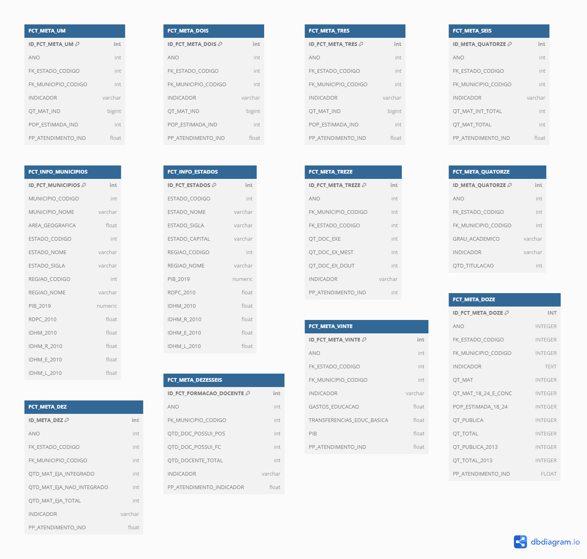

+PNE - Team Dados
Documentação de metas, transformações e dados disponíveis
Metas
Para cumprir o Plano Nacional de Educação (PNE) aprovado pela LEI N° 13.005/2014 com vigência de 10 anos, 20 metas totalizando 38 indicadores foram estipulados. Esta seção formaliza o processo para geração destes indicadores, detalhando fontes dos dados, suas transformações, variáveis e como são calculados.
Os nomes e descrições das metas, bem como dos indicadores, foram retirados do site PNE em movimento. As estratégias de cada meta podem ser lidas no portal do PNE.
Transformações
Arquitetura

Visando manter um fluxo de coleta, transformação, ingestão e publicação de dados necessários ao projeto, a arquitetura que será apresentada está em adaptação contínua para assegurar que atende às exigências atuais das equipes que dela dependem.
Das fonte de dados, os dados educacionais são coletados do INEP, enquanto os dados socioeconômicos são coletados do AtlasBR. Já os dados bases de estimativas populacionais, são coletados do IBGE. Os dados brutos extraídos se diferenciam entre os formatos “xlsx, csv, html ou txt”, sendo arquivados num teamdrive de acesso restrito.
As estimativas populacionais segmentadas por município e idade, são calculadas pela ferramenta Popro, desenvolvida internamente. Tanto o processo de exploração e transformação dos dados Educacionais quanto os Populacionais são realizados com uso intenso da biblioteca Pandas, através de notebooks python onde parte deles são executados e parametrizados com uso do Papermill. Atualmente a arquitetura de dados está em migração para o Data Build Tool (DBT) como centralizador das transformações e documentações dos dados, bem como criação e ingestão das tabelas no banco de dados.. A partir de um servidor dedicado através de conteinerização, os dados transformados são persistidos em banco de dados PostgreSQL. As ontologias são persistidas com Ontop. Por fim, as apresentações de dados são realizadas através da ferramenta Streamlit.
Dados disponíveis (DW)
Data Build Tool (DBT)
Ver documentação
Staging

Img: Diagrama DW staging
ver imagem completa
{kind=link}
Serving

Img: Diagrama DW serving
Arquivos de modelagem: txt e sql
Instrução de Acesso ao DW online: [Em breve]
Repositório GIT
Equipe
- Andreza Leite - Team Leader - andreza.leite@ufrpe.br
- Abílio Nogueira - Data Engineering - abilionbarros@gmail.com
- Déryck - Data Engineering